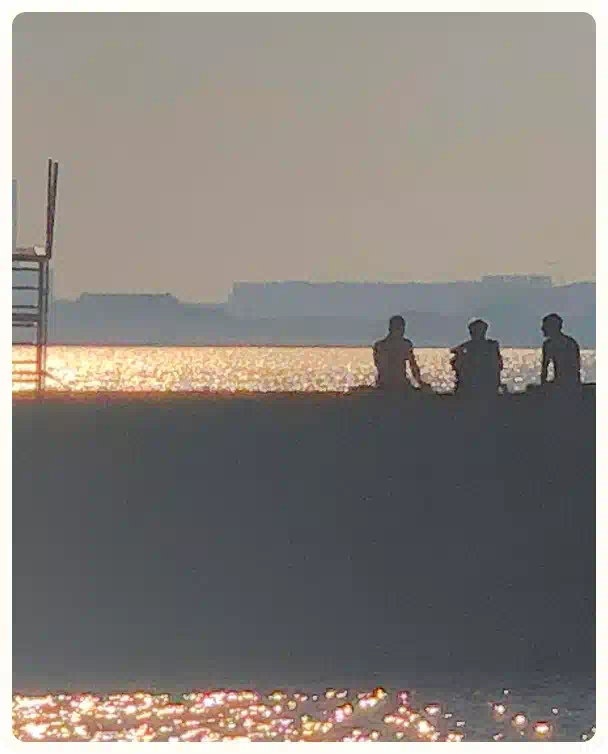
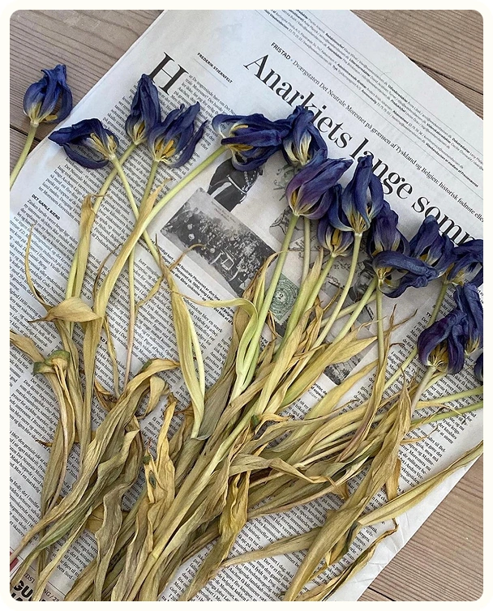
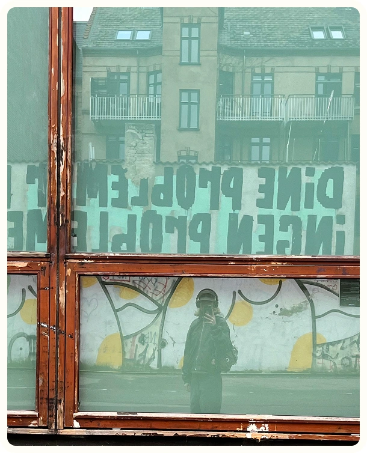
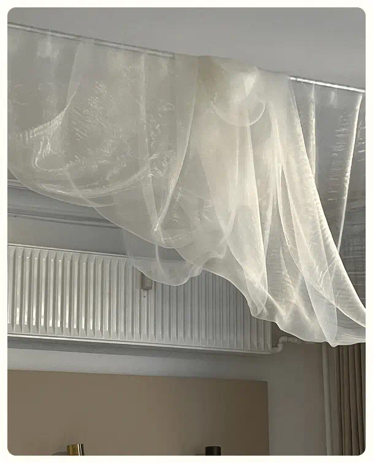
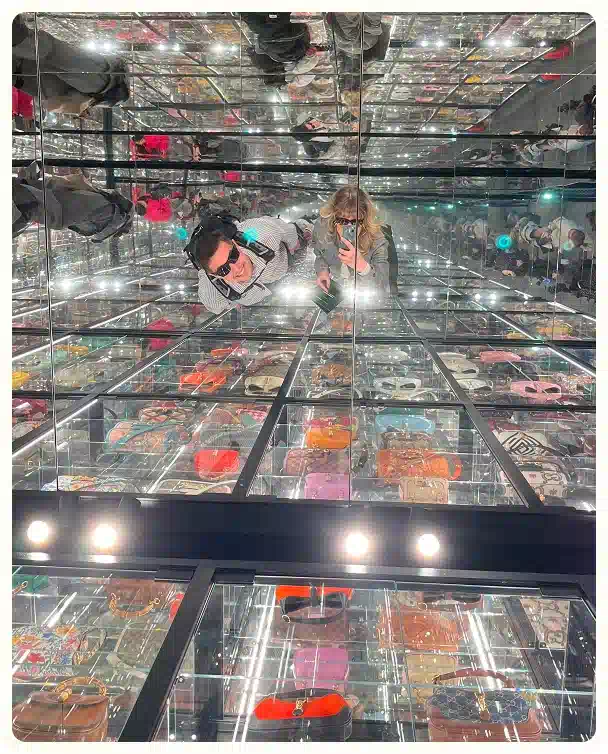
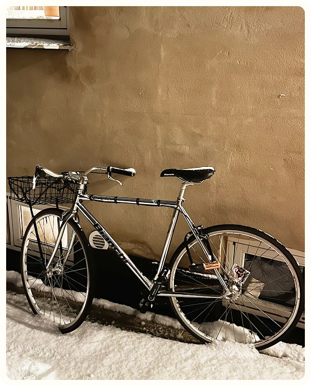
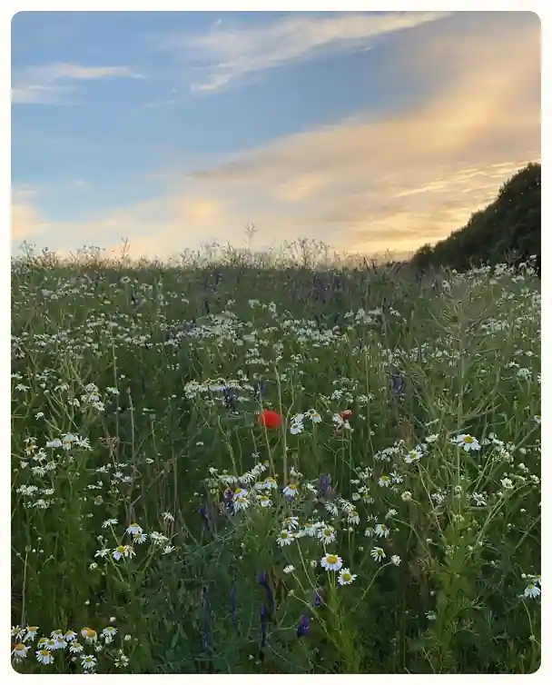
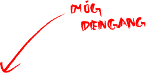

PORTFOLIO
Multimedie Design Studerende
Ditte Helene Andersen







EN DIGITAL REJSE

Som barn vidste jeg nok ikke lige, jeg ville gå på
multimediedesignuddannelsen, da jeg sad på vores gamle
Windows-computer.
For mig var det en leg der handlede om skøre 3D-pauseskærme, tegne i
Paint, WordArt med farverige fonte og de små sjove animations
features.
Det var leg og nysgerrighed. I dag kan jeg mærke en nostalgi fra den
tid, som stadig hænger sammen med min interesse for webdesign. At se
den udvikling, der er sket siden, gør det, jeg lærer i dag, endnu
sjovere.